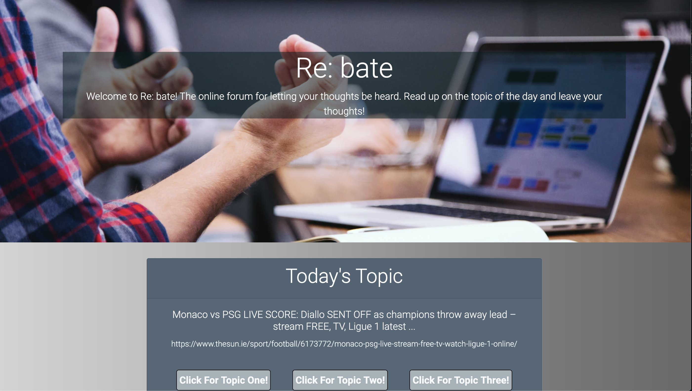

Front-End Delvelopment Examples
- Project Title:Homework Helper
- GitHub Repository:Homework Helper Repository
- Deployed Application:Homework Helper!
- Description:Created for grades K-12. Homework Helper is an online platform to keep track of assignments. This application also assists students with their homework in the form of a calculator, grammar bot, and spell checker. We’ve added a place for artwork as well!
- Project Title:QuizApp
- GitHub Repository:QuizApp Repository
- Deployed Application:QuizAPP!
- Description:In this simple quiz application we use HTML, CSS, JS, and DOM manipulation to write a quiz about coding, This quiz is timed, begins on a start button, the quiz lets a user know if they are correct or incorrect by showing red or green on the selected answer. The top 5 quiz scores are saved onto a High Scores page where the user can enter their intials or name.
Back-End Delvelopment Examples
Full-Stack Delvelopment Examples

- Project Title:Re: Bate
- GitHub Repository:Re: Bate Repository
- Deployed Application:Re: Bate
- Description:A custom made sequelize ORM. This application allows users to create a debate on a choice of three topics brough into our database from googleTrends. This application allows users to cooment on the topic above and see what others think about it.

- Project Title:Stop! Burger-Time!
- GitHub Repository:Stop! Burger-Time! Repository
- Deployed Application:Stop! Burger-Time
- Description:A Burger ORM that allows the user to create a list of burgers and then click a button to eat them and change the column to devour. This is a designed in an MVC style and uses mySQL as a database.